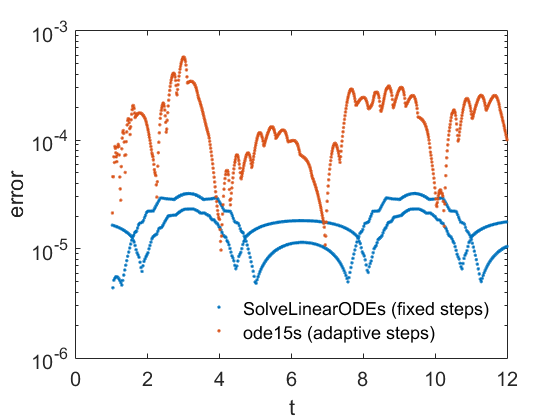

Implicit solution of an unsteady reaction-diffusion problem
clear FDLabFolders
PDE coefficients: The manufactured solution is polynomial in space, but non-polynomial in time.
rho = 1; % reaction coefficient kappa = 5; % diffusion coefficient [exactSolution, domainSource, NeumannSource] = ... DataUnsteadyPoly(kappa, rho); % source terms
Spatial grid
x = lglspace(0, 3, 21); y = lglspace(0, 2, 25); xyGrid = FDGrid(x, y); % xyGrid point coordinates Dirichlet = FDDirichletUnsteady( ... xyGrid, exactSolution, xyGrid.Indices(1, :)); % south boundary, say
Temporal grid
timeSpan = [1, 12]; % time interval numSteps = 800; % number of time steps tGrid = linspace(timeSpan(1), timeSpan(end), numSteps + 1)';
Initial state
uInitial = exactSolution(timeSpan(1), xyGrid.X, xyGrid.Y);
Mass matrix and stiffness matrix
M = FDMassMatrix(xyGrid, Dirichlet); A = FDSystemMatrix(xyGrid, kappa, rho, Dirichlet);
Modify interface for use with generic time-stepping routines
f = @(t) -FDSystemVectorUnsteady( ...
t, xyGrid, domainSource, NeumannSource, Dirichlet);
Solution with our new code
theta = 0.5;
U = FDSolveLinearODEs(M, A, f, tGrid, uInitial, theta); % solve IVP
Reference solution with production code ode15s. This code is not part of the lab, but may be of interest :-)
RHS = @(t, u) A*u + f(t); options = odeset( ... 'RelTol', 1e-3, ... 'AbsTol', 1e-3, ... 'InitialStep', tGrid(2) - tGrid(1), ... 'Jacobian', A, ... 'Mass', M, ... 'MassSingular', 'yes', ... 'Stats', 'on'); [~,UU] = ode15s(RHS, tGrid, uInitial, options);
41 successful steps 3 failed attempts 88 function evaluations 0 partial derivatives 12 LU decompositions 87 solutions of linear systems
Time history of relative errors
max2 = @(a) max(a, [], 2); % maximum in each row set(gca, 'FontSize', FontSize) semilogy( ... tGrid, max2(Compare(FDEvaluate(exactSolution, xyGrid, tGrid), U)), '.', ... tGrid, max2(Compare(FDEvaluate(exactSolution, xyGrid, tGrid), UU)), '.') set(legend( ... 'SolveLinearODEs (fixed steps)', ... 'ode15s (adaptive steps)', ... 'Location', 'SouthEast'), 'Box', 'off') set(gca, 'FontSize', 15) xlabel('t') ylabel('error')
Ensure that relative errors are reasonably small and comparable with those of ode15s.
assert(max(max2(Compare(FDEvaluate(exactSolution, xyGrid, tGrid), U))) < 1e-2)